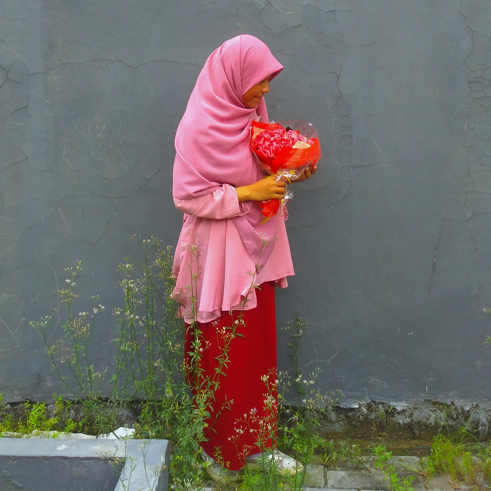

Mahasiswa PPG Prajabatan Informatika
Saya berharap dapat menjadi guru yang tidak hanya mengajarkan ilmu, tetapi juga mendampingi, memotivasi, dan membentuk karakter murid. Saya ingin menciptakan pembelajaran yang inklusif, bermakna, dan menyenangkan, serta memberikan kesempatan yang setara bagi setiap murid untuk berkembang dan meraih potensi terbaiknya.

Memahami konteks pendidikan Indonesia dan visi profesional sebagai calon guru Informatika.
Mahasiswa PPG Prajabatan Informatika
Saya adalah calon guru yang memiliki semangat untuk terus belajar, bertumbuh, dan memberikan dampak positif bagi murid. Melalui program PPG, saya akan terus mengembangkan kompetensi dan belajar menjadi pendidik yang profesional, reflektif, dan mampu menciptakan pembelajaran yang bermakna bagi setiap murid.
Mewujudkan ekosistem pendidikan Indonesia yang berkeadilan dan tanpa sekat, di mana kualitas pembelajaran, penguatan soft skill, dan pembentukan karakter tidak lagi ditentukan oleh status ekonomi maupun letak geografis, termasuk daerah 3T (Terdepan, Terluar, Tertinggal). Saya memiliki visi agar setiap anak Indonesia, baik yang berada di kota, pinggiran, maupun pelosok desa, memperoleh porsi pendidikan yang setara, sebab saya meyakini bahwa potensi kognitif mereka sama besarnya. Kesenjangan yang perlu diatasi hanyalah keterbatasan akses dan fasilitas belajar yang bermakna.
Menjadi pendidik profesional yang mampu menciptakan pembelajaran yang inklusif, humanis, dan bermakna. Saya ingin terus mengembangkan kompetensi pedagogik, kepribadian, sosial, dan profesional, sekaligus menjadi teladan dalam akhlak dan semangat belajar. Sebagai guru Informatika, saya berharap dapat memberikan kesempatan yang setara bagi setiap murid untuk berkembang dan mencapai potensi terbaiknya, terutama mereka yang memiliki keterbatasan akses pendidikan.
Komitmen dan misi dalam mengembangkan praktik pembelajaran yang bermakna dan berdampak.
Terus meningkatkan kompetensi melalui belajar, refleksi, dan kolaborasi.
Menciptakan pembelajaran yang bermakna, kontekstual, dan berpusat pada murid.
Memanfaatkan teknologi untuk meningkatkan literasi digital dan kemandirian murid.
Mendedikasikan diri untuk memperluas akses pendidikan bagi setiap murid.
Dokumentasi kegiatan pembelajaran dan pengalaman selama mengikuti Program PPG.
Praktik Pengalaman Lapangan
Dokumentasi pelaksanaan PPL Terbimbing yang terdiri dari tiga siklus pembelajaran.
Lihat DokumentasiAkademik
Dokumentasi refleksi dan pembelajaran dari mata kuliah yang ditempuh selama Semester 1.
Lihat Mata KuliahPraktik Pengalaman Lapangan
Dokumentasi pelaksanaan PPL Mandiri, perangkat pembelajaran, dan kegiatan mengajar di sekolah.
Lihat DokumentasiAkademik
Daftar mata kuliah utama yang ditempuh pada Semester 2 PPG.
Lihat Mata KuliahKarya & Dokumentasi
Kumpulan karya dan artefak yang dihasilkan selama proses pembelajaran dan pengembangan kompetensi.
Lihat ArtefakProfil Guru
Gambaran nilai, karakter, kompetensi, dan profil guru yang ingin dikembangkan.
Lihat Model GuruPerjalanan PPG bukan hanya tentang menghasilkan perangkat pembelajaran, tetapi juga tentang memahami proses belajar peserta didik, mengevaluasi praktik pembelajaran, menerima umpan balik, dan terus mengembangkan diri sebagai calon guru profesional.